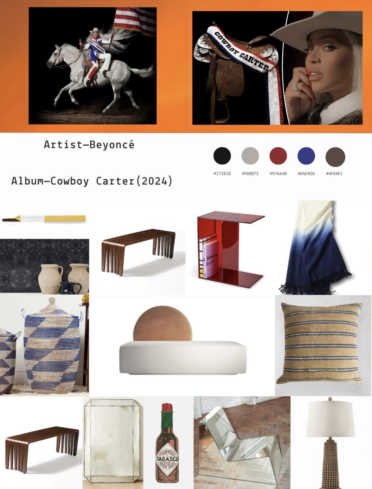

Albums as Interiors
Music, interpreted through space.
An exploration of albums through interiors, objects, color, art, and cultural storytelling.

Cowboy Carter
Beyoncé · 2024
An exploration of albums through interiors, objects, color, art, and cultural storytelling.

Beyoncé · 2024